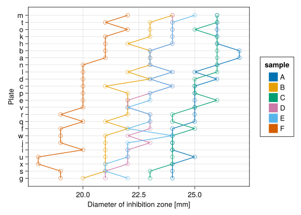
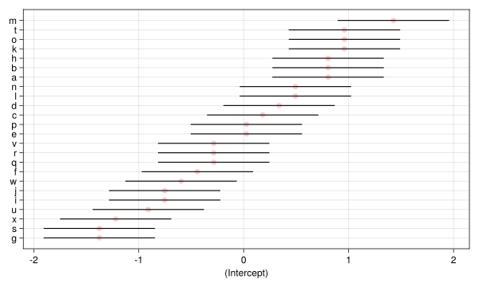
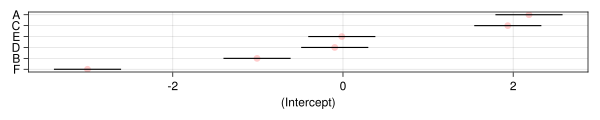
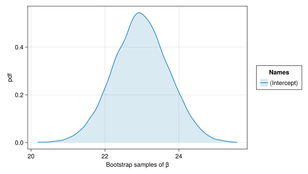
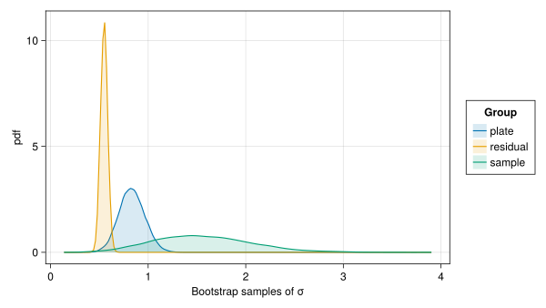
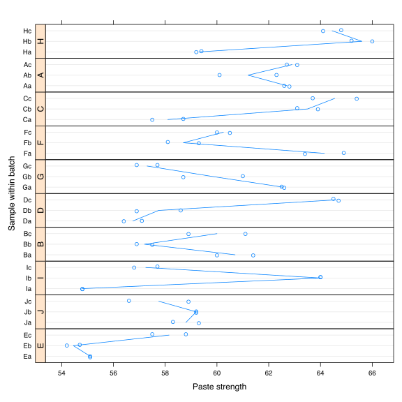
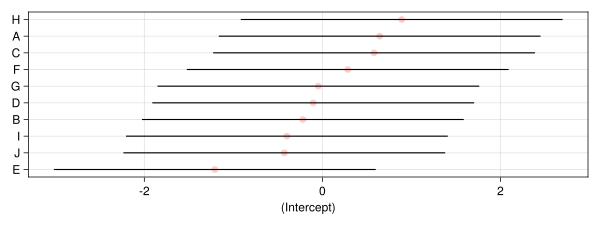
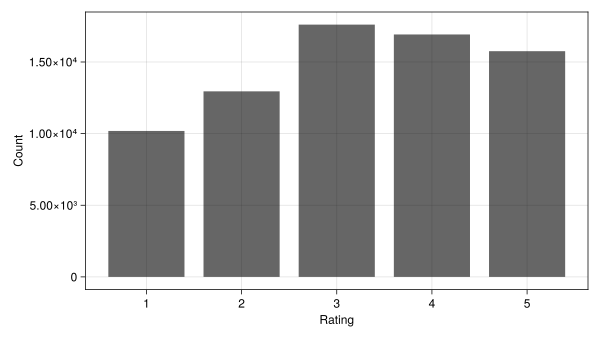
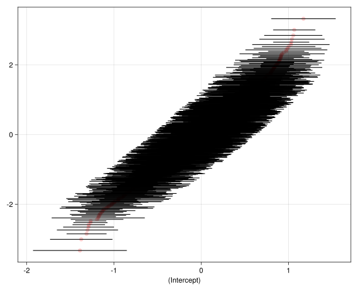
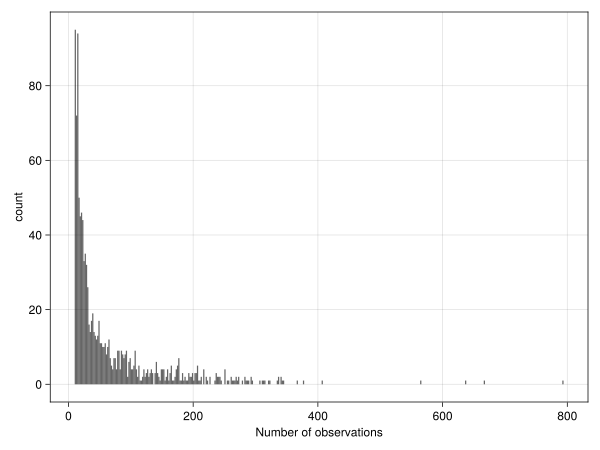

penicillin = MixedModels.dataset(:penicillin)Arrow.Table with 144 rows, 3 columns, and schema:
:plate String
:sample String
:diameter Int8\[ \newcommand\bbA{{\mathbf{A}}} \newcommand\bbb{{\mathbf{b}}} \newcommand\bbI{{\mathbf{I}}} \newcommand\bbL{{\mathbf{L}}} \newcommand\bbR{{\mathbf{R}}} \newcommand\bbX{{\mathbf{X}}} \newcommand\bbx{{\mathbf{x}}} \newcommand\bby{{\mathbf{y}}} \newcommand\bbZ{{\mathbf{Z}}} \newcommand\bbbeta{{\boldsymbol{\beta}}} \newcommand\bbeta{{\boldsymbol{\eta}}} \newcommand\bbLambda{{\boldsymbol{\Lambda}}} \newcommand\bbOmega{{\boldsymbol{\Omega}}} \newcommand\bbmu{{\boldsymbol{\mu}}} \newcommand\bbSigma{{\boldsymbol{\Sigma}}} \newcommand\bbtheta{{\boldsymbol{\theta}}} \newcommand\mcN{{\mathcal{N}}} \newcommand\mcB{{\mathcal{B}}} \newcommand\mcY{{\mathcal{Y}}} \]
Attach the packages to be used in this chapter
const hide_progress = true
using AlgebraOfGraphics
using CairoMakie
using CategoricalArrays
using DataFrameMacros
using DataFrames
if contains(first(Sys.cpu_info()).model, "Intel")
using MKL
end
using MixedModels
using MixedModelsMakie
using ProgressMeter
using Random
using RCall
using StatsBase
ProgressMeter.ijulia_behavior(:clear);
CairoMakie.activate!(; type="svg");The mixed models considered in the previous chapter had only one random-effects term, which was a simple, scalar random-effects term, and a single fixed-effects coefficient. Although such models can be useful, it is with the facility to use multiple random-effects terms and to use random-effects terms beyond a simple, scalar term that we can begin to realize the flexibility and versatility of mixed models.
In this chapter we consider models with multiple simple, scalar random-effects terms, showing examples where the grouping factors for these terms are in completely crossed or nested or partially crossed configurations. For ease of description we will refer to the random effects as being crossed or nested although, strictly speaking, the distinction between nested and non-nested refers to the grouping factors, not the random effects.
One of the areas in which the methods in the MixedModels.jl package are particularly effective is in fitting models to cross-classified data where several factors have random effects associated with them. For example, in many experiments in psychology a reaction time for each of a group of subjects exposed to some or all of a group of stimuli or items is measured. If the subjects are considered to be a sample from a population of subjects and the items are a sample from a population of items, then it would make sense to associate random effects with both these factors.
In the past it was difficult to fit mixed models with multiple, crossed grouping factors to large, possibly unbalanced, data sets. The methods in MixedModels.jl are able to do this. To introduce the methods let us first consider a small, balanced data set with crossed grouping factors.
The data are derived from Table 6.6, p. 144 of Davies and Goldsmith (1972) where they are described as coming from an investigation to
assess the variability between samples of penicillin by the B. subtilis method. In this test method a bulk-innoculated nutrient agar medium is poured into a Petri dish of approximately 90 mm. diameter, known as a plate. When the medium has set, six small hollow cylinders or pots (about 4 mm. in diameter) are cemented onto the surface at equally spaced intervals. A few drops of the penicillin solutions to be compared are placed in the respective cylinders, and the whole plate is placed in an incubator for a given time. Penicillin diffuses from the pots into the agar, and this produces a clear circular zone of inhibition of growth of the organisms, which can be readily measured. The diameter of the zone is related in a known way to the concentration of penicillin in the solution.
As with the dyestuff data, we examine the structure
penicillin = MixedModels.dataset(:penicillin)Arrow.Table with 144 rows, 3 columns, and schema:
:plate String
:sample String
:diameter Int8and a summary
penicillin = DataFrame(penicillin)
describe(penicillin)3 rows × 7 columns
| variable | mean | min | median | max | nmissing | eltype | |
|---|---|---|---|---|---|---|---|
| Symbol | Union… | Any | Union… | Any | Int64 | DataType | |
| 1 | plate | a | x | 0 | String | ||
| 2 | sample | A | F | 0 | String | ||
| 3 | diameter | 22.9722 | 18 | 23.0 | 27 | 0 | Int8 |
of the data, then plot it
"""
_meanrespfrm(df, :resp::Symbol, :grps::Symbol; sumryf::Function=mean)
Returns a `DataFrame` created from df with the levels of `grps` reordered according to
`combine(groupby(df, grps), resp => sumryf)` and this summary DataFrame, also with the
levels of `grps` reordered.
"""
function _meanrespfrm(
df,
resp::Symbol,
grps::Symbol;
sumryf::Function=mean,
)
# ensure the relevant columns are types that Makie can deal with
df = transform(
df,
resp => Array,
grps => CategoricalArray;
renamecols=false,
)
# create a summary table by mean resp
sumry =
sort!(combine(groupby(df, grps), resp => sumryf => resp), resp)
glevs = string.(sumry[!, grps]) # group levels in ascending order of mean resp
levels!(df[!, grps], glevs)
levels!(sumry[!, grps], glevs)
return df, sumry
end
let
df, _ = _meanrespfrm(penicillin, :diameter, :plate)
sort!(df, [:plate, :sample])
mp = mapping(
:diameter => "Diameter of inhibition zone [mm]",
:plate => "Plate";
color=:sample,
)
draw(
data(df) * mp * visual(ScatterLines; marker='○', markersize=12),
)
end
The variation in the diameter is associated with the plates and with the samples. Because each plate is used only for the six samples shown here we are not interested in the contributions of specific plates as much as we are interested in the variation due to plates, and in assessing the potency of the samples after accounting for this variation. Thus, we will use random effects for the plate factor. We will also use random effects for the sample factor because, as in the dyestuff example, we are more interested in the sample-to-sample variability in the penicillin samples than in the potency of a particular sample.
In this experiment each sample is used on each plate. We say that the plate and sample factors are crossed, as opposed to nested factors, which we will describe in the next section. By itself, the designation “crossed” just means that the factors are not nested. If we wish to be more specific, we could describe these factors as being completely crossed, which means that we have at least one observation for each combination of a level of plate and a level of sample. We can see this in Figure 2.1. Alternatively, because there are moderate numbers of levels in these factors, we could also check by a cross-tabulation of these factors.
Like the dyestuff data, the factors in the penicillin data are balanced. That is, there are exactly the same number of observations on each plate and for each sample and, furthermore, there is the same number of observations on each combination of levels. In this case there is exactly one observation for each combination of sample and plate. We would describe the configuration of these two factors as an unreplicated, completely balanced, crossed design.
In general, balance is a desirable but precarious property of a data set. We may be able to impose balance in a designed experiment but we typically cannot expect that data from an observation study will be balanced. Also, as anyone who analyzes real data soon finds out, expecting that balance in the design of an experiment will produce a balanced data set is contrary to Murphy’s law. That’s why statisticians allow for missing data. Even when we apply each of the six samples to each of the 24 plates, something could go wrong for one of the samples on one of the plates, leaving us without a measurement for that combination of levels and thus an unbalanced data set.
A model incorporating random effects for both the plate and the sample is straightforward to specify — we include simple, scalar random effects terms for both these factors.
pnm01 = let
contrasts = Dict(:plate => Grouping(), :sample => Grouping())
form = @formula(diameter ~ 1 + (1 | plate) + (1 | sample))
fit(MixedModel, form, penicillin; contrasts)
end
println(pnm01)Minimizing 45 Time: 0:00:00 (16.22 ms/it)Linear mixed model fit by maximum likelihood
diameter ~ 1 + (1 | plate) + (1 | sample)
logLik -2 logLik AIC AICc BIC -166.0942 332.1883 340.1883 340.4761 352.0676
Variance components:
Column Variance Std.Dev.
plate (Intercept) 0.714980 0.845565
sample (Intercept) 3.135192 1.770647
Residual 0.302426 0.549933
Number of obs: 144; levels of grouping factors: 24, 6
Fixed-effects parameters:─────────────────────────────────────────────────
Coef. Std. Error z Pr(>|z|)
─────────────────────────────────────────────────(Intercept) 22.9722 0.744596 30.85 <1e-99
─────────────────────────────────────────────────This model display indicates that the sample-to-sample variability has the greatest contribution, then plate-to-plate variability and finally the “residual” variability that cannot be attributed to either the sample or the plate. These conclusions are consistent with what we see in the data plot (Figure 2.1).
caterpillar!(
Figure(; resolution=(800, 480)),
ranefinfo(pnm01, :plate),
)
caterpillar!(
Figure(; resolution=(800, 160)),
ranefinfo(pnm01, :sample),
)
The prediction intervals on the random effects (Figure 2.2 and Figure 2.3) confirm that the conditional distribution of the random effects for plate much less variability than does the conditional distribution of the random effects for sample. (Note that the horizontal scales on these two plots are different.) However, the conditional distribution of the random effect for a particular sample, say sample F, has less variability than the conditional distribution of the random effect for a particular plate, say plate m. That is, the lines in Figure 2.3 are wider than the lines in Figure 2.2, even after taking the different axis scales into account. This is because the conditional distribution of the random effect for a particular sample depends on 24 responses while the conditional distribution of the random effect for a particular plate depends on only 6 responses.
In Chapter 1 we saw that a model with a single, simple, scalar random-effects term generated a random-effects model matrix, \(\bbZ\), that is the matrix of indicators of the levels of the grouping factor. When we have multiple, simple, scalar random-effects terms, as in model pnm01, each term generates a matrix of indicator columns and these sets of indicators are concatenated to form the model matrix \(\bbZ\) whose transpose is
vcat(transpose.(sparse.(pnm01.reterms))...)30×144 SparseArrays.SparseMatrixCSC{Float64, Int32} with 288 stored entries:
⠉⠙⠒⠒⠒⠤⠤⠤⢄⣀⣀⣀⠀⠀⠀⠀⠀⠀⠀⠀⠀⠀⠀⠀⠀⠀⠀⠀⠀⠀⠀⠀⠀⠀⠀⠀⠀⠀⠀⠀
⠀⠀⠀⠀⠀⠀⠀⠀⠀⠀⠀⠈⠉⠉⠉⠒⠒⠒⠦⠤⠤⢤⣀⣀⣀⠀⠀⠀⠀⠀⠀⠀⠀⠀⠀⠀⠀⠀⠀⠀
⠀⠀⠀⠀⠀⠀⠀⠀⠀⠀⠀⠀⠀⠀⠀⠀⠀⠀⠀⠀⠀⠀⠀⠀⠀⠉⠉⠉⠓⠒⠒⠢⠤⠤⠤⣀⣀⣀⡀⠀
⠑⢌⠢⡜⢦⠓⢌⠢⡘⢦⠓⢌⠢⡘⢦⠳⢌⠢⡑⢦⠳⢌⠢⡑⢦⠳⡌⠢⡑⢤⠳⡌⠢⡑⢤⠳⡜⠢⡙⢍The relative covariance factor, \(\bbLambda_{\bbtheta}\), for this model is block diagonal, with two blocks, one of size 24 and one of size 6, each of which is a multiple of the identity. The diagonal elements of the two blocks are \(\theta_1\) and \(\theta_2\), respectively. The numeric values of these parameters can be obtained as
pnm01.θ'1×2 adjoint(::Vector{Float64}) with eltype Float64:
1.53758 3.21975The first parameter is the relative standard deviation of the random effects for plate, which has the value \(0.845565/0.549933=1.53758\) at convergence, and the second is the relative standard deviation of the sample random effects (\(1.770648/0.549933=3.21975\)).
Because \(\bbLambda_{\bbtheta}\) is diagonal, the pattern of non-zeros in \(\bbLambda_\bbtheta'\bbZ'\bbZ\bbLambda_\bbtheta+\bbI\) will be the same as that in \(\bbZ'\bbZ\). The sparse Cholesky factor, \(\bbL\), is lower triangular and has non-zero elements in the lower right hand corner in positions where \(\bbZ'\bbZ\) has systematic zeros.
sparseL(pnm01)30×30 SparseArrays.SparseMatrixCSC{Float64, Int32} with 189 stored entries:
⠑⢄⠀⠀⠀⠀⠀⠀⠀⠀⠀⠀⠀⠀⠀
⠀⠀⠑⢄⠀⠀⠀⠀⠀⠀⠀⠀⠀⠀⠀
⠀⠀⠀⠀⠑⢄⠀⠀⠀⠀⠀⠀⠀⠀⠀
⠀⠀⠀⠀⠀⠀⠑⢄⠀⠀⠀⠀⠀⠀⠀
⠀⠀⠀⠀⠀⠀⠀⠀⠑⢄⠀⠀⠀⠀⠀
⠀⠀⠀⠀⠀⠀⠀⠀⠀⠀⠑⢄⠀⠀⠀
⣿⣿⣿⣿⣿⣿⣿⣿⣿⣿⣿⣿⣷⣄⠀
⠛⠛⠛⠛⠛⠛⠛⠛⠛⠛⠛⠛⠛⠛⠓We say that “fill-in” has occurred when forming the sparse Cholesky decomposition. In this case there is a relatively minor amount of fill but in other cases there can be a substantial amount of fill. The computational methods are tuned to reduce the amount of fill.
A parametric bootstrap sample of the parameter estimates
bsrng = Random.seed!(9876789)
pnm01samp = parametricbootstrap(bsrng, 10_000, pnm01; hide_progress)
pnm01pars = DataFrame(pnm01samp.allpars);can be used to create shortest 95% coverage intervals for the parameters in the model.
DataFrame(shortestcovint(pnm01samp))4 rows × 5 columns
| type | group | names | lower | upper | |
|---|---|---|---|---|---|
| String | String? | String? | Float64 | Float64 | |
| 1 | β | missing | (Intercept) | 21.4993 | 24.4402 |
| 2 | σ | plate | (Intercept) | 0.586766 | 1.0985 |
| 3 | σ | sample | (Intercept) | 0.627596 | 2.55106 |
| 4 | σ | residual | missing | 0.475331 | 0.61701 |
As for model dsm01 the bootstrap parameter estimates of the fixed-effects parameter have approximately a “normal” or Gaussian shape, as shown in the kernel density plot (Figure 2.4)
draw(
data(@subset(pnm01pars, :type == "β")) *
mapping(
:value => "Bootstrap samples of β";
color=(:names => "Names"),
) *
AlgebraOfGraphics.density();
figure=(; resolution=(800, 450)),
)
and the shortest coverage interval on this parameter is close to the Wald interval
show(only(pnm01.beta) .+ [-2, 2] * only(pnm01.stderror))[21.483030391144812, 24.461414053292938]The densities of the variance-components, on the scale of the standard deviation parameters, are diffuse but do not exhibit point masses at zero.
draw(
data(@subset(pnm01pars, :type == "σ")) *
mapping(
:value => "Bootstrap samples of σ";
color=(:group => "Group"),
) *
AlgebraOfGraphics.density();
figure=(; resolution=(800, 450)),
)
The lack of precision in the estimate of \(\sigma_2\), the standard deviation of the random effects for sample, is a consequence of only having 6 distinct levels of the sample factor. The plate factor, on the other hand, has 24 distinct levels. In general it is more difficult to estimate a measure of spread, such as the standard deviation, than to estimate a measure of location, such as a mean, especially when the number of levels of the factor is small. Six levels are about the minimum number required for obtaining sensible estimates of standard deviations for simple, scalar random effects terms.
In this section we again consider a simple example, this time fitting a model with nested grouping factors for the random effects.
The third example from Davies and Goldsmith (1972, Table 6.5, p. 138) is described as coming from
deliveries of a chemical paste product contained in casks where, in addition to sampling and testing errors, there are variations in quality between deliveries …As a routine, three casks selected at random from each delivery were sampled and the samples were kept for reference. …Ten of the delivery batches were sampled at random and two analytical tests carried out on each of the 30 samples.
The structure and summary of the data object are
pastes = MixedModels.dataset(:pastes)Arrow.Table with 60 rows, 3 columns, and schema:
:batch String
:cask String
:strength Float64pastes =
@transform(DataFrame(pastes), :sample = string(:batch, :cask))
describe(pastes)4 rows × 7 columns
| variable | mean | min | median | max | nmissing | eltype | |
|---|---|---|---|---|---|---|---|
| Symbol | Union… | Any | Union… | Any | Int64 | DataType | |
| 1 | batch | A | J | 0 | String | ||
| 2 | cask | a | c | 0 | String | ||
| 3 | strength | 60.0533 | 54.2 | 59.3 | 66.0 | 0 | Float64 |
| 4 | sample | Aa | Jc | 0 | String |
As stated in the description in Davies and Goldsmith (1972), there are 30 samples, three from each of the 10 delivery batches. We have created a sample factor by concatenating the label of the batch factor with ‘a’, ‘b’ or ‘c’ to distinguish the three samples taken from that batch.
When plotting the strength versus batch and cask in the data we should remember that we have two strength measurements on each of the 30 samples. It is tempting to use the cask designation (‘a’, ‘b’ and ‘c’) to determine, say, the plotting symbol within a batch. It would be fine to do this within a batch but the plot would be misleading if we used the same symbol for cask ‘a’ in different batches. There is no relationship between cask ‘a’ in batch ‘A’ and cask ‘a’ in batch ‘B’. The labels ‘a’, ‘b’ and ‘c’ are used only to distinguish the three samples within a batch; they do not have a meaning across batches.
RCall.ijulia_setdevice(MIME("image/svg+xml"); width=8, height=8)
R"""
require("lattice", quietly=TRUE)
pp <- $pastes
pp <- within(pp, bb <- reorder(batch, strength))
dotplot(sample ~ strength | bb, pp, pch = 21, strip = FALSE,
strip.left = TRUE, layout = c(1, 10),
scales = list(y = list(relation = "free")),
ylab = "Sample within batch", type = c("p", "a"),
xlab = "Paste strength", jitter.y = TRUE)
"""
RObject{VecSxp}In Figure 2.6 we plot the two strength measurements on each of the samples within each of the batches and join up the average strength for each sample. The perceptive reader will have noticed that the levels of the factors on the vertical axis in this figure, and in Figure 1.1, and Figure 2.1, have been reordered according to increasing average response. In all these cases there is no inherent ordering of the levels of the covariate such as batch or plate. Rather than confuse our interpretation of the plot by determining the vertical displacement of points according to a random ordering, we impose an ordering according to increasing mean response. This allows us to more easily check for structure in the data, including undesirable characteristics like increasing variability of the response with increasing mean level of the response.
In Figure 2.6 we order the samples within each batch separately then order the batches according to increasing mean strength.
Figure 2.6 shows considerable variability in strength between samples relative to the variability within samples. There is some indication of variability between batches, in addition to the variability induced by the samples, but not a strong indication of a batch effect. For example, batches I and D, with low mean strength relative to the other batches, each contained one sample (I:b and D:c, respectively) that had high mean strength relative to the other samples. Also, batches H and C, with comparatively high mean batch strength, contain samples H:a and C:a with comparatively low mean sample strength. In Section 2.2.4 we will examine the need for incorporating batch-to-batch variability, in addition to sample-to-sample variability, in the statistical model.
Because each level of sample occurs with one and only one level of batch we say that sample is nested within batch. Some presentations of mixed-effects models, especially those related to multilevel modeling (Rasbash et al. 2000) or hierarchical linear models (Raudenbush and Bryk 2002), leave the impression that one can only define random effects with respect to factors that are nested. This is the origin of the terms “multilevel”, referring to multiple, nested levels of variability, and “hierarchical”, also invoking the concept of a hierarchy of levels. To be fair, both those references do describe the use of models with random effects associated with non-nested factors, but such models tend to be treated as a special case.
The blurring of mixed-effects models with the concept of multiple, hierarchical levels of variation results in an unwarranted emphasis on “levels” when defining a model and leads to considerable confusion. It is perfectly legitimate to define models having random effects associated with non-nested factors. The reasons for the emphasis on defining random effects with respect to nested factors only are that such cases do occur frequently in practice and that some of the computational methods for estimating the parameters in the models can only be easily applied to nested factors.
This is not the case for the methods used MixedModels.jl. Indeed there is nothing special done for models with random effects for nested factors. When random effects are associated with multiple factors exactly the same computational methods are used whether the factors form a nested sequence or are partially crossed or are completely crossed.
There is, however, one aspect of nested grouping factors that we should emphasize, which is the possibility of a factor that is implicitly nested within another factor. Suppose, for example, that the factor sample had been defined as having three levels instead of 30 with the implicit assumption that sample is nested within batch. It may seem silly to try to distinguish 30 different batches with only three levels of a factor but, unfortunately, data are frequently organized and presented like this, especially in text books. The factor cask in the data is exactly such an implicitly nested factor. If we cross-tabulate cask and batch we get the impression that these factors are crossed, not nested. If we know that the cask should be considered as nested within the batch then we should create a new categorical variable giving the batch-cask combination, which is exactly what the sample factor is.
In a small data set like we can quickly detect a factor being implicitly nested within another factor and take appropriate action. In a large data set, such as from a multi-center study, it is often assumed that, say, subject identifiers are unique to each center. Frequently this is not the case. Especially when dealing with large data sets, assumptions about nested identifiers should be checked carefully.
Fitting a model with simple, scalar random effects for nested factors is done in exactly the same way as fitting a model with random effects for crossed grouping factors. We include random-effects terms for each factor, as in
psm01 = let
contrasts = Dict(:sample => Grouping(), :batch => Grouping())
form = @formula(strength ~ 1 + (1 | sample) + (1 | batch))
fit(MixedModel, form, pastes; contrasts)
endMinimizing 36 Time: 0:00:00 ( 9.25 ms/it)| Est. | SE | z | p | σ_sample | σ_batch | |
|---|---|---|---|---|---|---|
| (Intercept) | 60.0533 | 0.6421 | 93.52 | <1e-99 | 2.9041 | 1.0951 |
| Residual | 0.8234 |
Not only is the model specification similar for nested and crossed factors, the internal calculations are performed according to the methods described in for each model type. Comparing the patterns in the matrices \(\bbLambda\), \(\bbZ'\bbZ\) and \(\bbL\) and the block structure
sparseL(psm01; full=true)42×42 SparseArrays.SparseMatrixCSC{Float64, Int32} with 153 stored entries:
⠑⢄⠀⠀⠀⠀⠀⠀⠀⠀⠀⠀⠀⠀⠀⠀⠀⠀⠀⠀⠀
⠀⠀⠑⢄⠀⠀⠀⠀⠀⠀⠀⠀⠀⠀⠀⠀⠀⠀⠀⠀⠀
⠀⠀⠀⠀⠑⢄⠀⠀⠀⠀⠀⠀⠀⠀⠀⠀⠀⠀⠀⠀⠀
⠀⠀⠀⠀⠀⠀⠑⢄⠀⠀⠀⠀⠀⠀⠀⠀⠀⠀⠀⠀⠀
⠀⠀⠀⠀⠀⠀⠀⠀⠑⢄⠀⠀⠀⠀⠀⠀⠀⠀⠀⠀⠀
⠀⠀⠀⠀⠀⠀⠀⠀⠀⠀⠑⢄⠀⠀⠀⠀⠀⠀⠀⠀⠀
⠀⠀⠀⠀⠀⠀⠀⠀⠀⠀⠀⠀⠑⢄⠀⠀⠀⠀⠀⠀⠀
⠤⢄⣀⠀⠀⠀⠀⠀⠀⠀⠀⠀⠀⠀⠑⢄⠀⠀⠀⠀⠀
⠀⠀⠀⠉⠑⠒⠤⢄⣀⠀⠀⠀⠀⠀⠀⠀⠑⢄⠀⠀⠀
⠀⠀⠀⠀⠀⠀⠀⠀⠀⠉⠑⠒⠤⢄⣀⠀⠀⠀⠑⢄⠀
⠛⠛⠛⠛⠛⠛⠛⠛⠛⠛⠛⠛⠛⠛⠛⠛⠛⠛⠛⠛⠓BlockDescription(psm01)| rows | sample | batch | fixed |
|---|---|---|---|
| 30 | Diagonal | ||
| 10 | Sparse | Diagonal | |
| 2 | Dense | Dense | Dense |
of psm01 to that of pnm01 shows that models with nested factors produce simple repeated structures along the diagonal of the sparse Cholesky factor, \(\bbL\). This type of structure has the desirable property that there is no “fill-in” during calculation of the Cholesky factor. In other words, the number of non-zeros in \(\bbL\) is the same as the number of non-zeros in the lower triangle of the matrix being factored, \(\bbLambda'\bbZ'\bbZ\bbLambda+\bbI\) (which, because \(\bbLambda\) is diagonal, has the same structure as \(\bbZ'\bbZ\)).
Fill-in of the Cholesky factor is not an important issue when we have a few dozen random effects, as we do here. It is an important issue when we have millions of random effects in complex configurations, as has been the case in some of the models that have been fit using MixedModels.
The parameter estimates are: \(\widehat{\sigma_1}\), the standard deviation of the random effects for sample; \(\widehat{\sigma_2}\), the standard deviation of the random effects for batch; \(\widehat{\sigma}\), the standard deviation of the residual noise term; and \(\widehat{\beta_1}=\), the overall mean response, which is labeled (Intercept) in these models.
The estimated standard deviation for sample is nearly three times as large as that for batch, which confirms what we saw in Figure 2.6. Indeed our conclusion from Figure 2.6 was that there may not be a significant batch-to-batch variability in addition to the sample-to-sample variability.
Plots of the prediction intervals of the random effects (Figure 2.7)
caterpillar!(
Figure(resolution=(800, 300)),
ranefinfo(psm01, :batch),
)
confirm this impression in that all the prediction intervals for the random effects for contain zero.
Furthermore, kernel density estimates from a parametric bootstrap sample of the estimated standard deviations of the random effects and residuals
Random.seed!(4567654)
psm01samp = parametricbootstrap(10_000, psm01; hide_progress)
psm01pars = DataFrame(psm01samp.allpars);draw(
data(@subset(psm01pars, :type == "σ")) *
mapping(
:value => "Bootstrap samples of σ";
color=(:group => "Group"),
) *
AlgebraOfGraphics.density();
figure=(; resolution=(800, 450)),
)
Because there are several indications that \(\sigma_2\) could reasonably be zero, resulting in a simpler model incorporating random effects for only, we perform a statistical test of this hypothesis.
One of the many famous statements attributed to Albert Einstein is “Everything should be made as simple as possible, but not simpler.” In statistical modeling this principal of parsimony is embodied in hypothesis tests comparing two models, one of which contains the other as a special case. Typically, one or more of the parameters in the more general model, which we call the alternative hypothesis, is constrained in some way, resulting in the restricted model, which we call the null hypothesis. Although we phrase the hypothesis test in terms of the parameter restriction, it is important to realize that we are comparing the quality of fits obtained with two nested models. That is, we are not assessing parameter values per se; we are comparing the model fit obtainable with some constraints on parameter values to that without the constraints. Because the more general model, \(H_a\), must provide a fit that is at least as good as the restricted model, \(H_0\), our purpose is to determine whether the change in the quality of the fit is sufficient to justify the greater complexity of model \(H_a\). This comparison is often reduced to a p-value, which is the probability of seeing a difference in the model fits as large as we did, or even larger, when, in fact, \(H_0\) is adequate. Like all probabilities, a p-value must be between 0 and 1. When the p-value for a test is small (close to zero) we prefer the more complex model, saying that we “reject \(H_0\) in favor of \(H_a\)”. On the other hand, when the p-value is not small we “fail to reject \(H_0\)”, arguing that there is a non-negligible probability that the observed difference in the model fits could reasonably be the result of random chance, not the inherent superiority of the model \(H_a\). Under these circumstances we prefer the simpler model, \(H_0\), according to the principal of parsimony.
These are the general principles of statistical hypothesis tests. To perform a test in practice we must specify the criterion for comparing the model fits, the method for calculating the p-value from an observed value of the criterion, and the standard by which we will determine if the p-value is “small” or not. The criterion is called the test statistic, the p-value is calculated from a reference distribution for the test statistic, and the standard for small p-values is called the level of the test.
In Section 1.3.2 we referred to likelihood ratio tests (LRTs) for which the test statistic is the difference in the deviance. That is, the LRT statistic is \(d_0-d_a\) where \(d_a\) is the deviance in the more general (\(H_a\)) model fit and \(d_0\) is the deviance in the constrained (\(H_0\)) model. An approximate reference distribution for an LRT statistic is the \(\chi^2_\nu\) distribution where \(\nu\), the degrees of freedom, is determined by the number of constraints imposed on the parameters of \(H_a\) to produce \(H_0\).
The restricted model fit
psm02 = let
form = @formula(strength ~ 1 + (1 | sample))
contrasts = Dict(:sample => Grouping())
fit(MixedModel, form, pastes; contrasts)
end| Est. | SE | z | p | σ_sample | |
|---|---|---|---|---|---|
| (Intercept) | 60.0533 | 0.5765 | 104.16 | <1e-99 | 3.1037 |
| Residual | 0.8234 |
is compared to model psm01 as
MixedModels.likelihoodratiotest(psm02, psm01)| model-dof | deviance | χ² | χ²-dof | P(>χ²) | |
|---|---|---|---|---|---|
| strength ~ 1 + (1 | sample) | 3 | 248 | |||
| strength ~ 1 + (1 | sample) + (1 | batch) | 4 | 248 | 0 | 1 | 0.5234 |
which provides a p-value of 52%. Because typical standards for “small” p-values are 5% or 1%, a p-value over 50% would not be considered significant at any reasonable level.
We do need to be cautious in quoting this p-value, however, because the parameter value being tested, \(\sigma_2=0\), is on the boundary of set of possible values, \(\sigma_2\ge 0\), for this parameter. The argument for using a \(\chi^2_1\) distribution to calculate a p-value for the change in the deviance does not apply when the parameter value being tested is on the boundary. As shown in Pinheiro and Bates (2000, Sect. 2.5), the p-value from the \(\chi^2_1\) distribution will be “conservative” in the sense that it is larger than a simulation-based p-value would be. In the worst-case scenario the \(\chi^2\)-based p-value will be twice as large as it should be but, even if that were true, an effective p-value of 26% would not cause us to reject \(H_0\) in favor of \(H_a\).
Comparing the coverage intervals for models psm01 and psm02
DataFrame(shortestcovint(psm01samp))4 rows × 5 columns
| type | group | names | lower | upper | |
|---|---|---|---|---|---|
| String | String? | String? | Float64 | Float64 | |
| 1 | β | missing | (Intercept) | 58.7732 | 61.3025 |
| 2 | σ | sample | (Intercept) | 1.93499 | 3.61949 |
| 3 | σ | batch | (Intercept) | 0.0 | 2.0894 |
| 4 | σ | residual | missing | 0.608904 | 1.02399 |
psm02samp = parametricbootstrap(
Random.seed!(9753579),
10_000,
psm02;
hide_progress=true,
)
DataFrame(shortestcovint(psm02samp))3 rows × 5 columns
| type | group | names | lower | upper | |
|---|---|---|---|---|---|
| String | String? | String? | Float64 | Float64 | |
| 1 | β | missing | (Intercept) | 58.9201 | 61.1886 |
| 2 | σ | sample | (Intercept) | 2.24908 | 3.83207 |
| 3 | σ | residual | missing | 0.61145 | 1.02324 |
The confidence intervals on \(\sigma\) and \(\beta_0\) are similar for the two models. The confidence interval on \(\sigma_1\) is slightly wider and incorporates larger values in model psm02 than in model psm01, because the variability that is attributed to batch in psm01 is incorporated into the variability due to sample in psm02.
Especially in observational studies with multiple grouping factors, the configuration of the factors frequently ends up neither nested nor completely crossed. We describe such situations as having partially crossed grouping factors for the random effects.
Studies in education, in which test scores for students over time are also associated with teachers and schools, usually result in partially crossed grouping factors. If students with scores in multiple years have different teachers for the different years, the student factor cannot be nested within the teacher factor. Conversely, student and teacher factors are not expected to be completely crossed. To have complete crossing of the student and teacher factors it would be necessary for each student to be observed with each teacher, which would be unusual. A longitudinal study of thousands of students with hundreds of different teachers inevitably ends up partially crossed.
In this section we consider an example with thousands of students and instructors where the response is the student’s evaluation of the instructor’s effectiveness. These data, like those from most large observational studies, are quite unbalanced.
The data are from a special evaluation of lecturers by students at the Swiss Federal Institute for Technology–Zürich (ETH–Zürich), to determine who should receive the “best-liked professor” award. These data have been slightly simplified and identifying labels have been removed, so as to preserve anonymity.
The variables
insteval = MixedModels.dataset(:insteval)Arrow.Table with 73421 rows, 7 columns, and schema:
:s String
:d String
:dept String
:studage String
:lectage String
:service String
:y Int8insteval = DataFrame(insteval)
describe(insteval)7 rows × 7 columns
| variable | mean | min | median | max | nmissing | eltype | |
|---|---|---|---|---|---|---|---|
| Symbol | Union… | Any | Union… | Any | Int64 | DataType | |
| 1 | s | S0001 | S2972 | 0 | String | ||
| 2 | d | I0001 | I2160 | 0 | String | ||
| 3 | dept | D01 | D15 | 0 | String | ||
| 4 | studage | 2 | 8 | 0 | String | ||
| 5 | lectage | 1 | 6 | 0 | String | ||
| 6 | service | N | Y | 0 | String | ||
| 7 | y | 3.20574 | 1 | 3.0 | 5 | 0 | Int8 |
have somewhat cryptic names. Factor s designates the student and d the instructor. The factor dept is the department for the course and service indicates whether the course was a service course taught to students from other departments.
Although the response, y, is on a scale of 1 to 5,
draw(
data(DataFrame(response=1:5, count=counts(insteval.y))) *
mapping(:response => "Rating", :count => "Count") *
visual(BarPlot);
figure=(; resolution=(800, 450)),
)
it is sufficiently diffuse to warrant treating it as if it were a continuous response.
At this point we will fit models that have random effects for student, instructor, and department (or the combination of department and service) to these data.
contrasts =
Dict(:s => Grouping(), :d => Grouping(), :dept => Grouping())
iem01 = let
form = @formula(y ~ 1 + (1 | s) + (1 | d) + (1 | dept))
fit(MixedModel, form, insteval; contrasts)
endMinimizing 102 Time: 0:00:01 (11.50 ms/it)| Est. | SE | z | p | σ_s | σ_d | σ_dept | |
|---|---|---|---|---|---|---|---|
| (Intercept) | 3.2519 | 0.0279 | 116.70 | <1e-99 | 0.3264 | 0.5173 | 0.0773 |
| Residual | 1.1777 |
All three estimated standard deviations of the random effects are less than \(\widehat{\sigma}\), with \(\widehat{\sigma}_3\), the estimated standard deviation of the random effects for the dept, less than one-tenth the estimated residual standard deviation.
It is not surprising that zero is within most of the prediction intervals on the random effects for this factor (Figure 2.10).
caterpillar!(Figure(resolution=(800, 400)), ranefinfo(iem01, :dept))
However, the p-value for the LRT of \(H_0:\sigma_3=0\) versus \(H_a:\sigma_3>0\)
iem02 = let
form = @formula(y ~ 1 + (1 | s) + (1 | d))
fit(MixedModel, form, insteval; contrasts)
end
MixedModels.likelihoodratiotest(iem02, iem01)Minimizing 47 Time: 0:00:00 ( 9.10 ms/it)| model-dof | deviance | χ² | χ²-dof | P(>χ²) | |
|---|---|---|---|---|---|
| y ~ 1 + (1 | s) + (1 | d) | 4 | 237778 | |||
| y ~ 1 + (1 | s) + (1 | d) + (1 | dept) | 5 | 237770 | 8 | 1 | 0.0043 |
is highly significant. That is, we have very strong evidence that we should reject \(H_0\) in favor of \(H_a\).
The seeming inconsistency of these conclusions is due to the large sample size (\(n=73421\)). When a model is fit to a large sample even the most subtle of differences can be highly “statistically significant”. The researcher or data analyst must then decide if these terms have practical significance, beyond the apparent statistical significance.
The large sample size also helps to assure that the parameters have good normal approximations. We could profile this model fit but doing so would take a very long time and, in this particular case, the analysts are more interested in a model that uses fixed-effects parameters for the instructors.
Before leaving this model we examine the sparse Cholesky factor, \(\bbL\), which is of size \(4116\times4116\).
sparseL(iem01; full=true)4116×4116 SparseArrays.SparseMatrixCSC{Float64, Int32} with 741328 stored entries:
⠑⢄⠀⠀⠀⠀⠀⠀⠀⠀⠀⠀⠀⠀⠀⠀⠀⠀⠀⠀⠀⠀⠀⠀⠀⠀⠀⠀⠀⠀⠀⠀⠀⠀⠀⠀⠀⠀⠀⠀
⠀⠀⠑⢄⠀⠀⠀⠀⠀⠀⠀⠀⠀⠀⠀⠀⠀⠀⠀⠀⠀⠀⠀⠀⠀⠀⠀⠀⠀⠀⠀⠀⠀⠀⠀⠀⠀⠀⠀⠀
⠀⠀⠀⠀⠑⢄⠀⠀⠀⠀⠀⠀⠀⠀⠀⠀⠀⠀⠀⠀⠀⠀⠀⠀⠀⠀⠀⠀⠀⠀⠀⠀⠀⠀⠀⠀⠀⠀⠀⠀
⠀⠀⠀⠀⠀⠀⠑⢄⠀⠀⠀⠀⠀⠀⠀⠀⠀⠀⠀⠀⠀⠀⠀⠀⠀⠀⠀⠀⠀⠀⠀⠀⠀⠀⠀⠀⠀⠀⠀⠀
⠀⠀⠀⠀⠀⠀⠀⠀⠑⢄⠀⠀⠀⠀⠀⠀⠀⠀⠀⠀⠀⠀⠀⠀⠀⠀⠀⠀⠀⠀⠀⠀⠀⠀⠀⠀⠀⠀⠀⠀
⠀⠀⠀⠀⠀⠀⠀⠀⠀⠀⠑⢄⠀⠀⠀⠀⠀⠀⠀⠀⠀⠀⠀⠀⠀⠀⠀⠀⠀⠀⠀⠀⠀⠀⠀⠀⠀⠀⠀⠀
⠀⠀⠀⠀⠀⠀⠀⠀⠀⠀⠀⠀⠑⢄⠀⠀⠀⠀⠀⠀⠀⠀⠀⠀⠀⠀⠀⠀⠀⠀⠀⠀⠀⠀⠀⠀⠀⠀⠀⠀
⠀⠀⠀⠀⠀⠀⠀⠀⠀⠀⠀⠀⠀⠀⠑⢄⠀⠀⠀⠀⠀⠀⠀⠀⠀⠀⠀⠀⠀⠀⠀⠀⠀⠀⠀⠀⠀⠀⠀⠀
⠀⠀⠀⠀⠀⠀⠀⠀⠀⠀⠀⠀⠀⠀⠀⠀⠑⢄⠀⠀⠀⠀⠀⠀⠀⠀⠀⠀⠀⠀⠀⠀⠀⠀⠀⠀⠀⠀⠀⠀
⠀⠀⠀⠀⠀⠀⠀⠀⠀⠀⠀⠀⠀⠀⠀⠀⠀⠀⠑⢄⠀⠀⠀⠀⠀⠀⠀⠀⠀⠀⠀⠀⠀⠀⠀⠀⠀⠀⠀⠀
⠀⠀⠀⠀⠀⠀⠀⠀⠀⠀⠀⠀⠀⠀⠀⠀⠀⠀⠀⠀⠑⢄⠀⠀⠀⠀⠀⠀⠀⠀⠀⠀⠀⠀⠀⠀⠀⠀⠀⠀
⠀⠀⠀⠀⠀⠀⠀⠀⠀⠀⠀⠀⠀⠀⠀⠀⠀⠀⠀⠀⠀⠀⠑⢄⠀⠀⠀⠀⠀⠀⠀⠀⠀⠀⠀⠀⠀⠀⠀⠀
⠀⠀⠀⠀⠀⠀⠀⠀⠀⠀⠀⠀⠀⠀⠀⠀⠀⠀⠀⠀⠀⠀⠀⠀⠑⢄⠀⠀⠀⠀⠀⠀⠀⠀⠀⠀⠀⠀⠀⠀
⠀⠀⠀⠀⠀⠀⠀⠀⠀⠀⠀⠀⠀⠀⠀⠀⠀⠀⠀⠀⠀⠀⠀⠀⠀⠀⠑⢄⠀⠀⠀⠀⠀⠀⠀⠀⠀⠀⠀⠀
⣶⣶⣶⣶⣶⣶⣶⣶⣶⣶⣶⣶⣶⣶⣶⣶⣶⣶⣶⣶⣶⣶⣶⣶⣶⣶⣶⣶⣷⣄⠀⠀⠀⠀⠀⠀⠀⠀⠀⠀
⣿⣿⣿⣿⣿⣿⣿⣿⣿⣿⣿⣿⣿⣿⣿⣿⣿⣿⣿⣿⣿⣿⣿⣿⣿⣿⣿⣿⣿⣿⣷⣄⠀⠀⠀⠀⠀⠀⠀⠀
⣿⣿⣿⣿⣿⣿⣿⣿⣿⣿⣿⣿⣿⣿⣿⣿⣿⣿⣿⣿⣿⣿⣿⣿⣿⣿⣿⣿⣿⣿⣿⣿⣷⣄⠀⠀⠀⠀⠀⠀
⣿⣿⣿⣿⣿⣿⣿⣿⣿⣿⣿⣿⣿⣿⣿⣿⣿⣿⣿⣿⣿⣿⣿⣿⣿⣿⣿⣿⣿⣿⣿⣿⣿⣿⣷⣄⠀⠀⠀⠀
⣿⣿⣿⣿⣿⣿⣿⣿⣿⣿⣿⣿⣿⣿⣿⣿⣿⣿⣿⣿⣿⣿⣿⣿⣿⣿⣿⣿⣿⣿⣿⣿⣿⣿⣿⣿⣷⣄⠀⠀
⣿⣿⣿⣿⣿⣿⣿⣿⣿⣿⣿⣿⣿⣿⣿⣿⣿⣿⣿⣿⣿⣿⣿⣿⣿⣿⣿⣿⣿⣿⣿⣿⣿⣿⣿⣿⣿⣿⣷⣄Even as a sparse matrix this factor requires a considerable amount of memory, but as a triangular dense matrix it would require nearly 10 times as much. There are \((4116\times 4117)/2\) elements on and below the diagonal, each of which would require 8 bytes of storage.
It is sometimes felt that it is more difficult to achieve favorable ratings from students in a service course (i.e. a course taught to students majoring in another program) as opposed to students taking a course in their major.
There are several ways in which service can be incorporated in a model like this. The simplest approach is to add service to the fixed-effects specification
iem03 = let
form = @formula(y ~ 1 + service + (1 | s) + (1 | d) + (1 | dept))
fit(MixedModel, form, insteval; contrasts)
endMinimizing 125 Time: 0:00:01 (11.31 ms/it)| Est. | SE | z | p | σ_s | σ_d | σ_dept | |
|---|---|---|---|---|---|---|---|
| (Intercept) | 3.2826 | 0.0284 | 115.53 | <1e-99 | 0.3255 | 0.5150 | 0.0785 |
| service: Y | -0.0926 | 0.0134 | -6.92 | <1e-11 | |||
| Residual | 1.1775 |
In model iem03 the effect of service is considered to be constant across departments and is modeled with a single fixed-effects parameter, which is the difference in a typical rating in a service course to a non-service course. This parameter also affects the interpretation of the (Intercept) coefficient. With the service term in the model the (Intercept) becomes a typical rating at the reference level (i.e. non-service or service: N) because the default coding for the service term is zero at the reference level and one for service: Y.
The coding can be changed by specifying a non-default contrast for service. For example, the EffectsCoding and HelmerCoding contrasts will both assign -1 to the first level (N in this case) and +1 to the second level (Y).
A qqcaterpillar plot of the instructor (i.e. factor d in the data) random effects, Figure 2.11,
qqcaterpillar!(
Figure(; resolution=(800, 650)),
ranefinfo(iem01, :d),
)
shows the differences in precision due to different numbers of observations for different instructors.
draw(
data(combine(groupby(insteval, :d), nrow => :n)) *
mapping(:n => "Number of observations") *
AlgebraOfGraphics.histogram(; bins=410);
figure=(; resolution=(800, 600)),
)
The precision of the conditional distributions of the random effects, as measured by the width of the intervals, varies considerably between instructors.
We can determine that instructor I1258 has the largest mean of the conditional distributions of the random effects
last(
sort(DataFrame(ranefinfotable(ranefinfo(iem01, :d))), :cmode),
5,
)5 rows × 4 columns
| name | level | cmode | cstddev | |
|---|---|---|---|---|
| String | String | Float64 | Float64 | |
| 1 | (Intercept) | I0066 | 1.03151 | 0.105472 |
| 2 | (Intercept) | I0193 | 1.04027 | 0.190826 |
| 3 | (Intercept) | I0844 | 1.05502 | 0.169915 |
| 4 | (Intercept) | I1866 | 1.06625 | 0.123322 |
| 5 | (Intercept) | I1258 | 1.17205 | 0.188496 |
but the conditional distribution of this random effect clearly overlaps significantly with others.
A simple, scalar random effects term in an model formula is of the form , where is an expression whose value is the grouping factor of the set of random effects generated by this term. Typically, F is simply the name of a factor, as in most of the examples in this chapter. However, the grouping factor can be the value of an expression, such as in the last example.
Because simple, scalar random-effects terms can differ only in the description of the grouping factor we refer to configurations such as crossed or nested as applying to the terms or to the random effects, although it is more accurate to refer to the configuration as applying to the grouping factors.
A model formula can include several such random effects terms. Because configurations such as nested or crossed or partially crossed grouping factors are a property of the data, the specification in the model formula does not depend on the configuration. We simply include multiple random effects terms in the formula specifying the model.
One apparent exception to this rule occurs with implicitly nested factors, in which the levels of one factor are only meaningful within a particular level of the other factor. In the pastes data, levels of the factor cask are only meaningful within a particular level of the factor batch. A model formula of would result in a fitted model that did not appropriately reflect the sources of variability in the data. Following the simple rule that the factor should be defined so that distinct experimental or observational units correspond to distinct levels of the factor will avoid such ambiguity.
For convenience, a model with multiple, nested random-effects terms can be specified as which internally is re-expressed as We will avoid terms of the form , preferring instead an explicit specification with simple, scalar terms based on unambiguous grouping factors.
The insteval data, described in Section 2.3.1, illustrate some of the characteristics of the real data to which mixed-effects models are now fit. There is a large number of observations associated with several grouping factors; two of which, student and instructor, have a large number of levels and are partially crossed. Such data are common in sociological and educational studies but until now it has been very difficult to fit models that appropriately reflect such a structure. Much of the literature on mixed-effects models leaves the impression that multiple random effects terms can only be associated with nested grouping factors. The resulting emphasis on hierarchical or multilevel configurations is an artifact of the computational methods used to fit the models, not the models themselves.
The parameters of the models fit to small data sets have properties similar to those for the models in the previous chapter. That is, profile-based confidence intervals on the fixed-effects parameter, \(\beta_0\), are symmetric about the estimate but overdispersed relative to those that would be calculated from a normal distribution and the logarithm of the residual standard deviation, \(\log(\sigma)\), has a good normal approximation. Profile-based confidence intervals for the standard deviations of random effects (\(\sigma_1\), \(\sigma_2\), etc.) are symmetric on a logarithmic scale except for those that could be zero.
Another observation from the last example is that, for data sets with a very large numbers of observations, a term in a model may be “statistically significant” even when its practical significance is questionable.